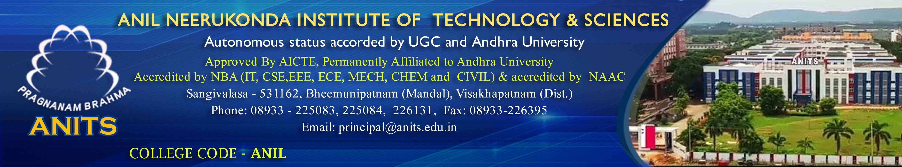

2021-2022 Batch Total Placements -1716 : : Amazon SDE- 2 (44.00LP), Amazon (SDE) - 1 (31.57 LP), Amazon P.A - 1 (31.31 LP), Amazon S.E- 1 (20 .00LP), Walmart Global Tech- 1 (21 .00LP), Lowe's India- 1 (19.34LPA), TCS Digital- 16 (7.70LPA), TCS Ninja- 239 (3.36LPA), Wipro Turbo- 271 (6.50LPA), Wipro Elite- 286 (3.50LPA), Infosys S.P- 3 (9.50LPA), Infosys D.S.E - 40 (6.25LPA), Infosys SE- 243 (3.60LPA), Hexaware Technologies- 66 (4.00LPA), Deloitte- 33 (4.50-6.00LPA), IBM ISDL - 1 (11.00LPA), IBM ASE- 16 (4.50LPA), Factset- 3 (8.91 LPA)
♦Ranked 251-300 band at National level in NIRF 2022 ranking by MHRD. ♦ANITS is Recognised as Host Institute (HI) to act as Business Incubator (BI) under MSME Incubation Scheme. ♦Seven-Day Workshop on "Foundations of Cybersecurity" ♦One-Week Faculty Development Program on "Foundations and Applications of AI in Healthcare" ♦A Two Week Hybrid (ONLINE & OFFLINE) Faculty Development Programme (FDP) ♦Roles and Responsibilities for faculty ♦Transport Details ♦B.Tech in HONORS/MINORS ♦Student and Faculty Feedback to AICTE ♦e-Learn/ Video Lectures